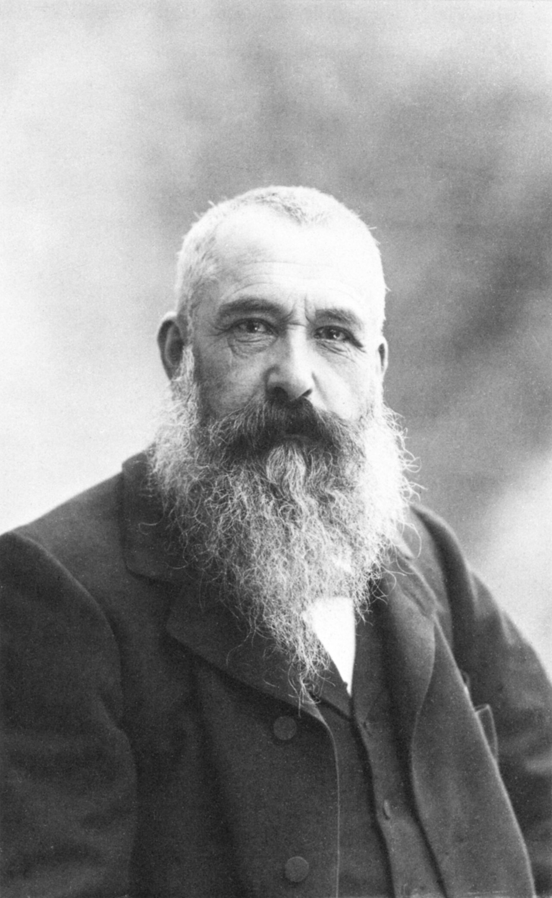
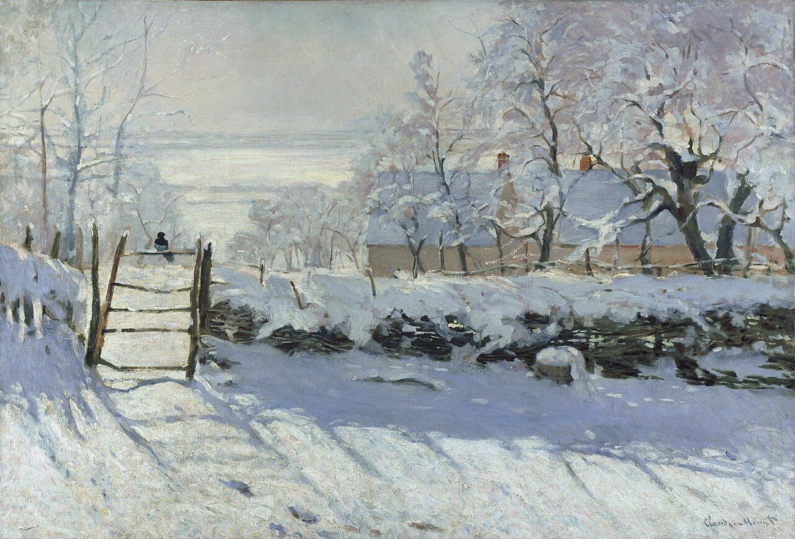

Water Lilies
Water, bloom, and reflection become a gentle field of colour with no single fixed viewpoint.
A painter of light
A central figure in Impressionism, devoted to the endlessly changing colours of weather, water, gardens, and air.

Biography
Claude Monet grew up in Le Havre and became part of a group of young French painters who wanted to work directly from modern life and the changing outdoors. Their loose touch and interest in transient effects challenged the polished finish expected by the official art world.
Monet’s 1872 harbour view, Impression, Sunrise, gave the Impressionist movement its name. He went on to paint fields, train stations, coastlines, cathedrals, haystacks, and his garden at Giverny, often revisiting the same subject as light and season changed.
In his final decades, Monet’s water garden became a laboratory for paintings that dissolve horizon, reflection, plant, and sky into a shimmering field. The Water Lilies works made the act of looking itself feel spacious and absorbing.
Monet used broken, visible colour and rapid-looking marks to suggest fleeting light rather than fixed outlines. His paintings are less about describing objects than about recording how atmosphere changes the way those objects appear.
Four works to know
Water, bloom, and reflection become a gentle field of colour with no single fixed viewpoint.

A glowing orange sun punctuates a misty harbour, capturing an instant rather than a detailed record.

A quiet snow scene where blue shadows and winter light matter as much as the small bird.

Red poppies, blue sky, and strolling figures give everyday leisure a lively, airy presence.
Keep exploring
Each return to a familiar subject can reveal a different world.